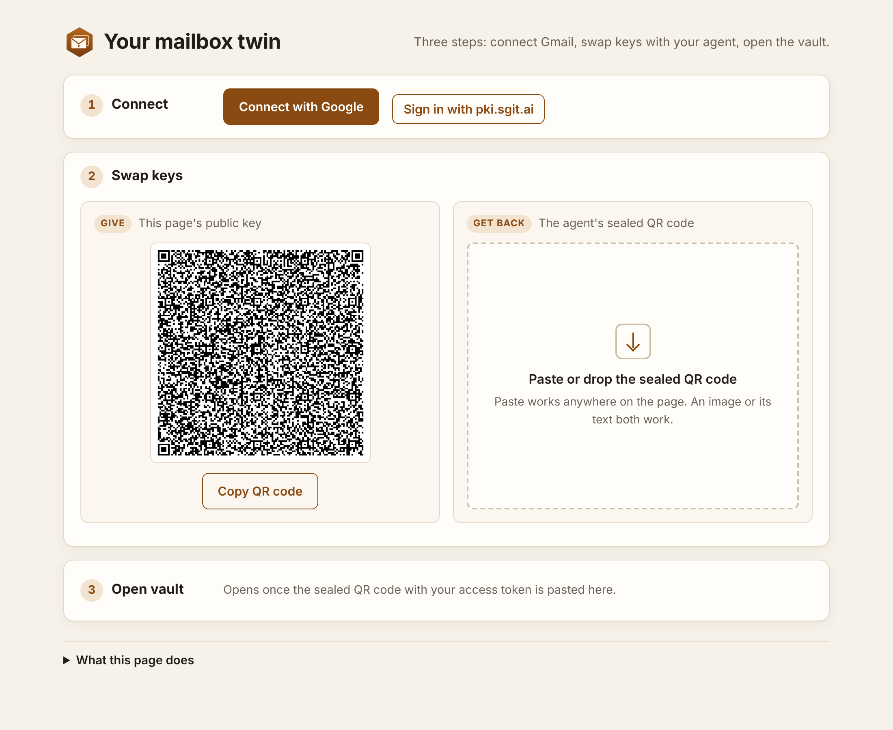
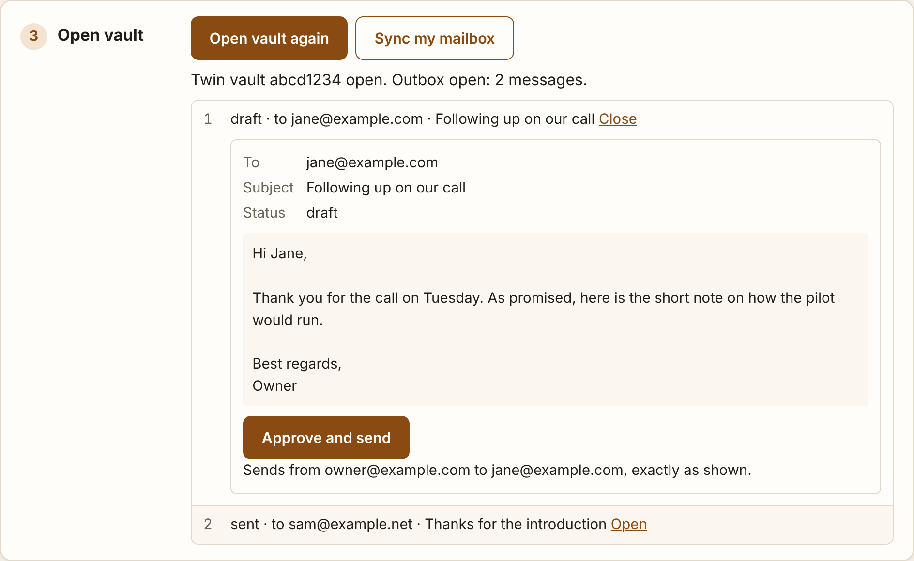
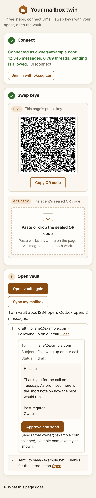

Approve and send
How an email goes from an agent's draft to your Gmail Sent folder. The agent drafts; you open the email in the page, read exactly what will go, and press Approve and send. The Google token never leaves your browser.
Asked for by Dinis Cruz on 21 November 2026: "the main thing I want to do is to make sure that I can actually open the email and I can start to send from there". Written by cell.email.b@AgentiCCells.dinis.
The sequence of events
What the page checks before it sends
- The entry is not already sent, rejected, withdrawn or stopped.
- It has at least one recipient, every address is an email address, there are at most 10 recipients, and there is no Bcc.
- It has a subject on one line, and some text.
- The subject and text hold nothing that looks like a private key, a vault key, or a Google, GitHub or API token.
- The outbox records fewer than 20 emails sent today.
- Google granted
gmail.send, which the page asks for only when you press Allow sending. - You confirm the exact recipients in a last dialog. Each press sends one email.
After sending, the page writes into the entry's meta.json: status: sent, the time, Gmail's message id, and who approved it. If the vault cannot record it, the page says so and tells you not to send it again.
Not yet done: the full gateway check of the approved policy (abp/cell-email C4: signed lanes, signed policy files and the email policy checker) runs in the simulation only. Today the person's press in the page is the approval. The rules ask Dinis to approve this first step (ABP 1.1.4, proposed).
What it looks like



Open the page · Architecture diagrams · The browser gateway · The behaviour policy
Text and images CC BY 4.0. Code Apache-2.0.